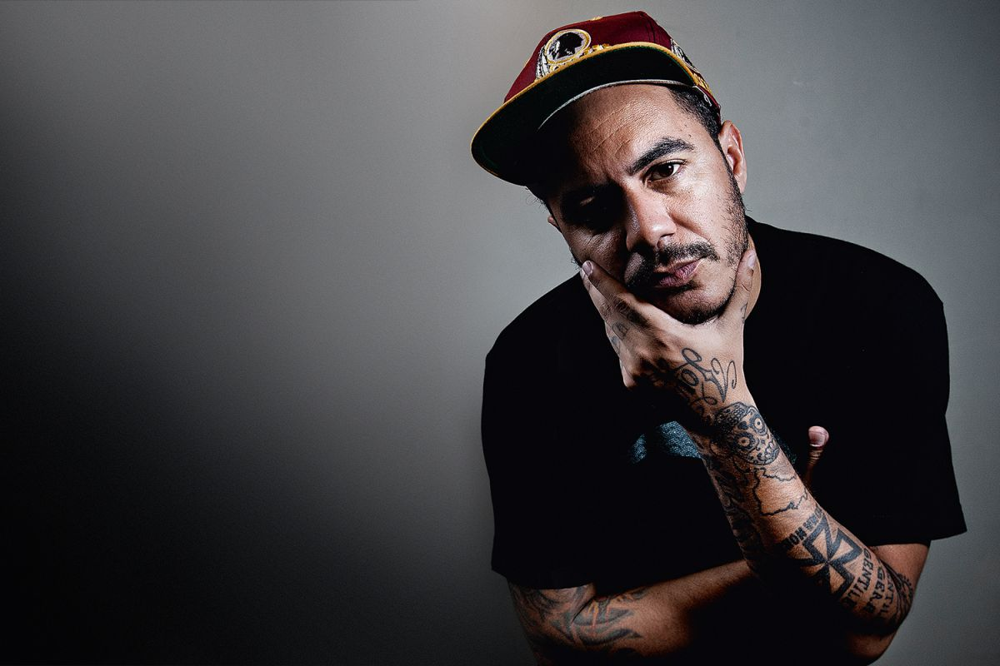
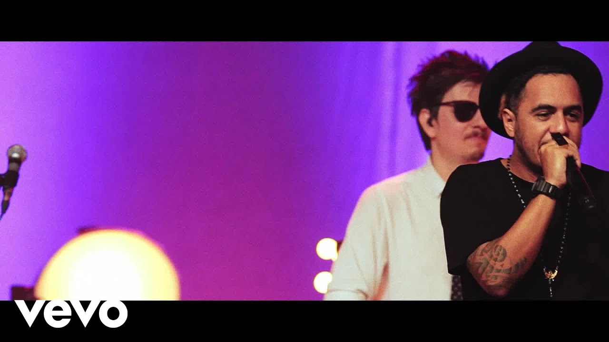

Marcelo Maldonado Gomes Peixoto, mais conhecido como Marcelo D2, é um rapper brasileiro que ficou famoso por misturar o samba com a black music. Nascido em 5 de novembro de 1967 no Rio de Janeiro, ele começou sua carreira como vocalista da banda Planet Hemp, mas hoje segue em carreira solo e em projeto paralelo com a volta da banda.
Marcelo D2 surgiu na música brasileira em 1995 com o disco de estreia do Planet Hemp, “Usuário”, que mostrou pela primeira vez as virtudes de um autêntico hip hop feito no Brasil. O som era pesado, cercado de brasilidade e carioquice, e as letras discutiam a discriminação da maconha e a liberdade de expressão.
Em 1998, Marcelo D2 deu um tempo do grupo e gravou o álbum “Eu Tiro É Onda”, em que misturava samba e hip-hop. Essa fusão só seria reconhecida e consagrada em 2003, com o lançamento de “A Procura da Batida Perfeita”, seu primeiro álbum em carreira solo.
Marcelo D2 é conhecido por suas parcerias com artistas de outros gêneros, como o axé music, e com pessoas que fazem batidas de música eletrônica com a boca, popularmente conhecido como beatbox. Atualmente, um de seus principais parceiros em shows e turnês é Fernandinho BeatBox.
A história de Marcelo D2 é uma história de superação e sucesso na música brasileira. Ele revolucionou o hip hop nacional ao misturar elementos do samba e da black music, criando um som único e autêntico. Sua música continua inspirando gerações e sua história é um exemplo de determinação e talento.